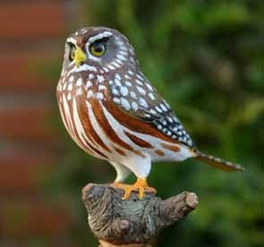

Los Estrígidos
LOS ESTRÍGIDOS

Los estrígidos (Strigidae) son uno de los dos clados de rapaces nocturnas del grupo Strigiformes, el cual incluye los búhos, mochuelos,
autillos, cárabos, caburés, tecolotes, etc. Son aves adaptadas a la noche, aunque no tanto como las lechuzas de la familia Tytonidae.
Se alimentan generalmente de invertebrados y de pequeños vertebrados. Tienen hábitos nocturnos, pero algunas especies, como Glaucidium
brasilianum, cazan también durante el día. El clado está compuesto por casi doscientas especies.